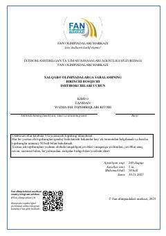

K2Kimyo fanidan xalqaro olimpiadalarga saralash uchun mo'ljallangan yozma ish topshiriqlari to'plami.
Ushbu kitob kimyo fanidan xalqaro olimpiadalarga saralashning birinchi bosqichi uchun mo'ljallangan yozma ish topshiriqlarini o'z ichiga oladi. Unda murakkab kimyoviy masalalar, jumladan, termodinamika, kinetika va kislota-ishqor muvozanati bo'yicha nazariy hamda amaliy topshiriqlar keltirilgan.